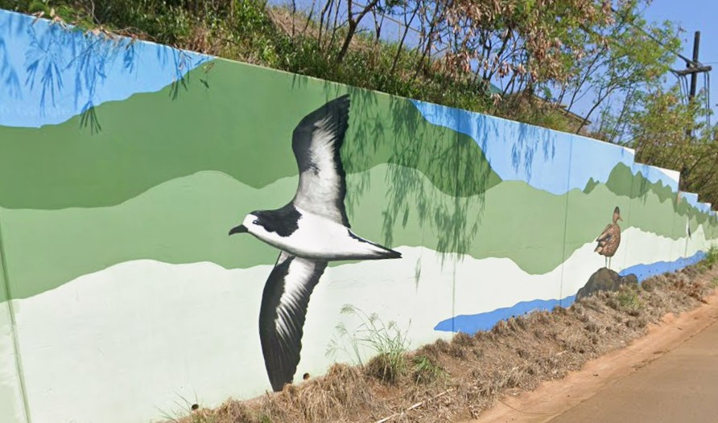

ʻEleʻele
Place: ʻEleʻele, Kauaʻi
Type: Plantation town / community / harbor landscape
Story it tells: A community whose name recalls the dark soils and waters near Hanapēpē River, later shaped by McBryde Sugar Company and the growth of Port Allen Harbor.

ʻEleʻele is a community on Kauaʻi's south side, located on the bluffs above Port Allen and east of the Hanapēpē River. The name ʻeleʻele means "black" or "dark," often understood as a reference to the area's dark volcanic soil, shaded river waters, or the darker landscape along this side of the valley.
Unlike neighboring Hanapēpē, which developed over a longer period as a valley town and independent commercial community, ʻEleʻele grew more deliberately during the plantation era. In the early twentieth century, McBryde Sugar Company developed the area as a company town to support sugar cultivation, harbor operations, and plantation labor on Kauaʻi's southern coast.
Plantation housing, schools, roads, and community facilities were built to serve workers and families connected to sugar. Nearby Port Allen became the shipping outlet for plantation sugar, tying ʻEleʻele directly to rail lines, harbor improvements, and the export economy that developed south and southwest Kauaʻi.
The Hanapēpē River formed an important boundary. Hanapēpē town sat across the river, while ʻEleʻele became closely associated with plantation planning and corporate development. Together, the two communities show different sides of Kauaʻi's history: one shaped by small businesses and town life, the other by sugar, port infrastructure, and plantation organization, just a stone throw away from eachother.
Today, ʻEleʻele remains closely connected to Port Allen Harbor, which now serves commercial vessels, fishing boats, and many Nā Pali Coast tour operations. Sugar fell over time, however, the community still carries the imprint of its plantation origins, its harbor connection, and its name's older relationship to the dark soils and waters of the Hanapēpē landscape, into modern times.